Formularios r02 · antes y después
Izquierda: el playground real (#sec-form, Chromium, tema por defecto). Derecha: el prototipo de kiwi con el marco ajustado al mismo ancho de contenido que el formulario del playground en esa ventana (910 / 662 / 302px). El prototipo es wireframe gris: compara distribución, bordes y alineación, no estética. Medidas en declaracion.md §1.
«Fondo negro» de Edad (tema oscuro, antes)
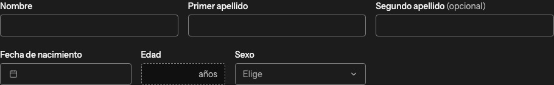
Formulario corto · ventana 1280px
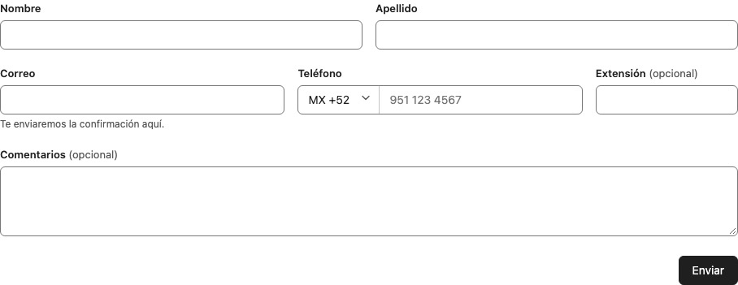
Formulario corto · ventana 720px
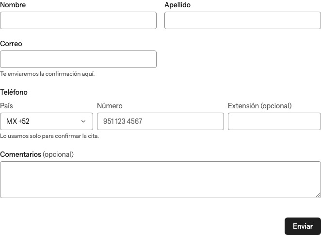
Formulario corto · ventana 360px
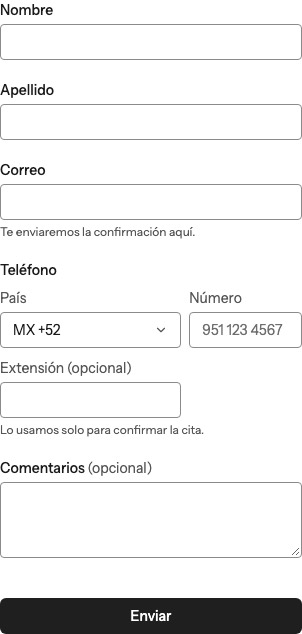
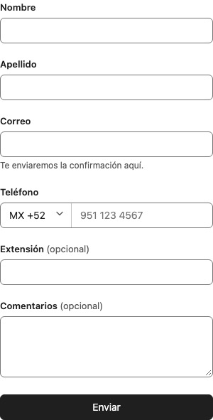
Mediano con secciones · ventana 1280px
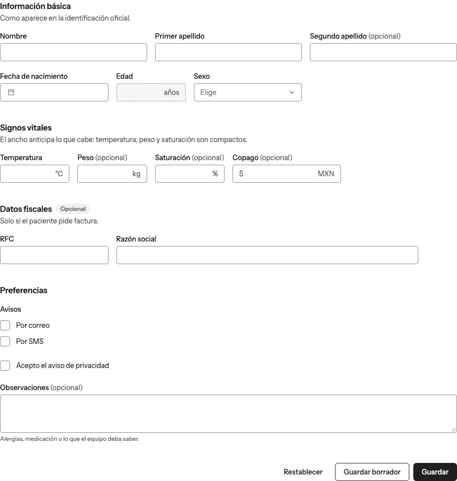
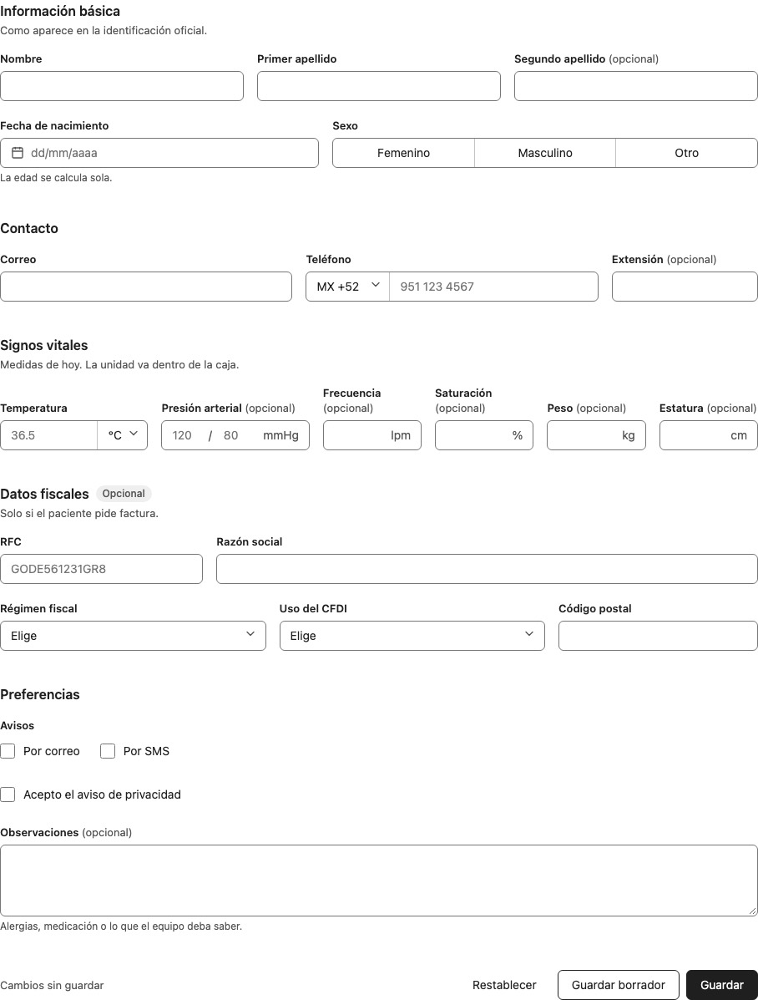
Mediano con secciones · ventana 720px
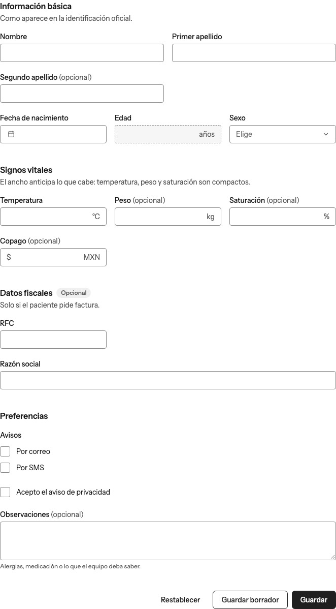
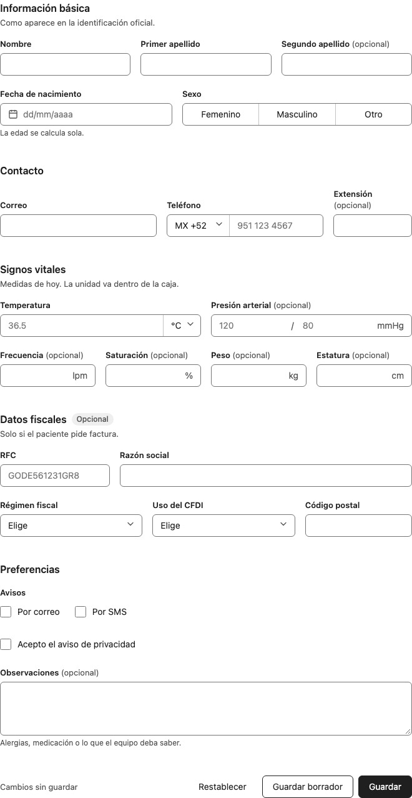
Mediano con secciones · ventana 360px
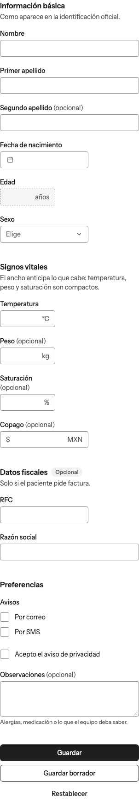
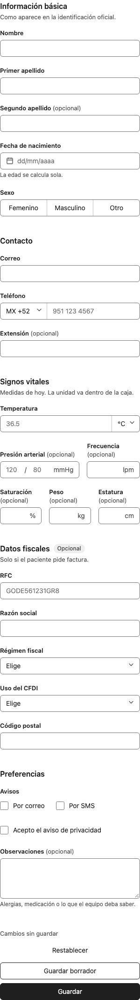
Dirección · ventana 1280px
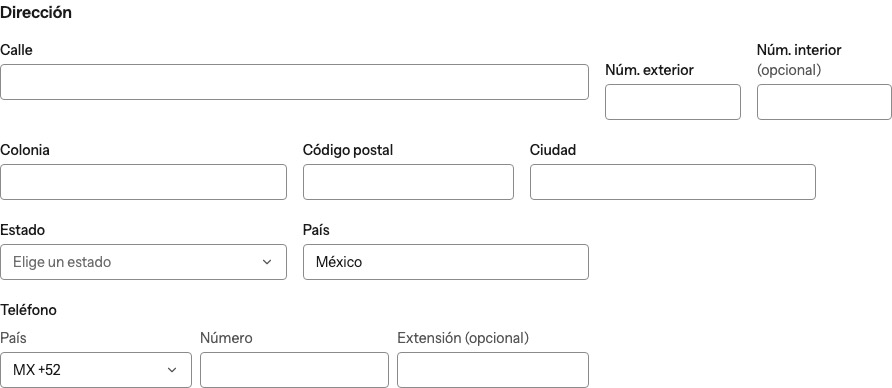
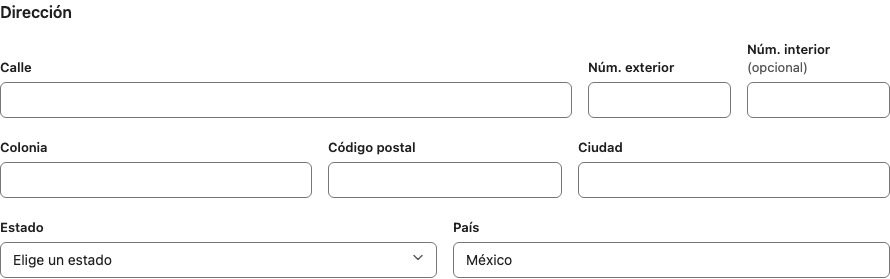
Dirección · ventana 720px
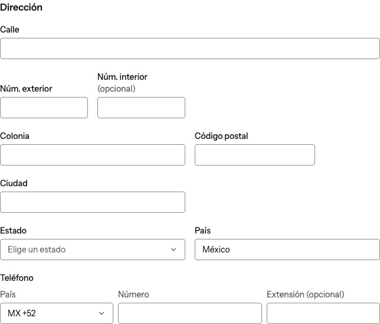
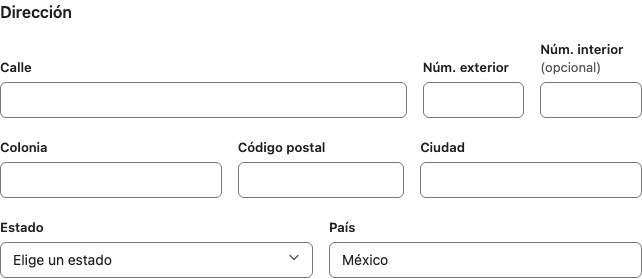
Dirección · ventana 360px
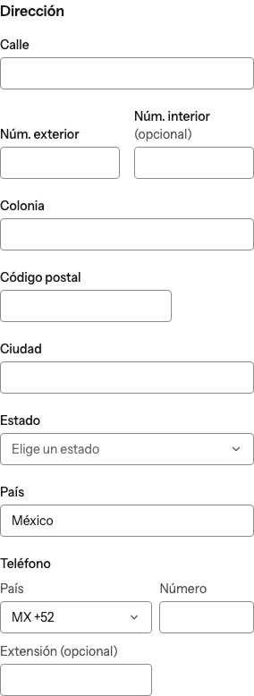
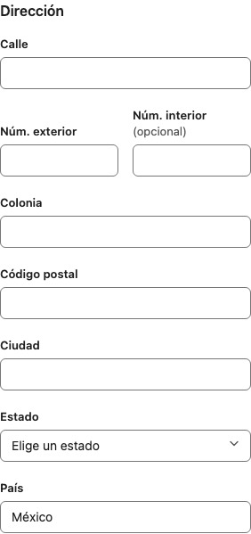